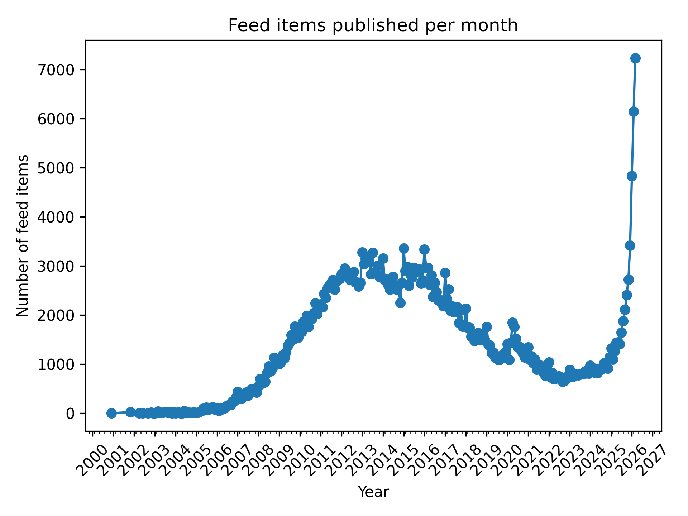
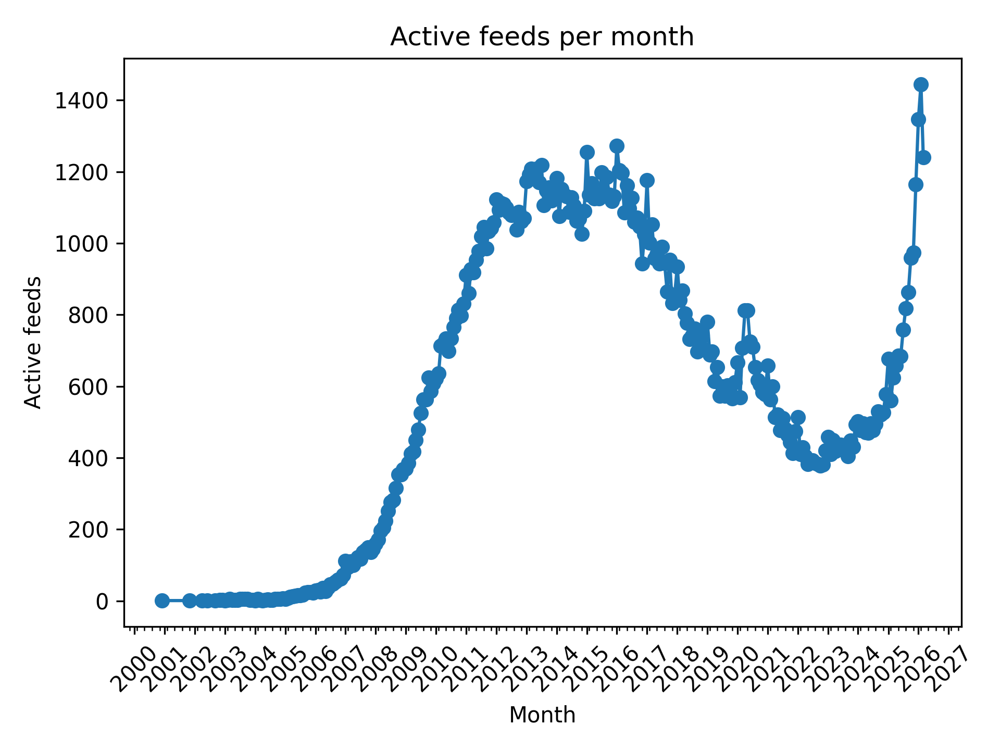
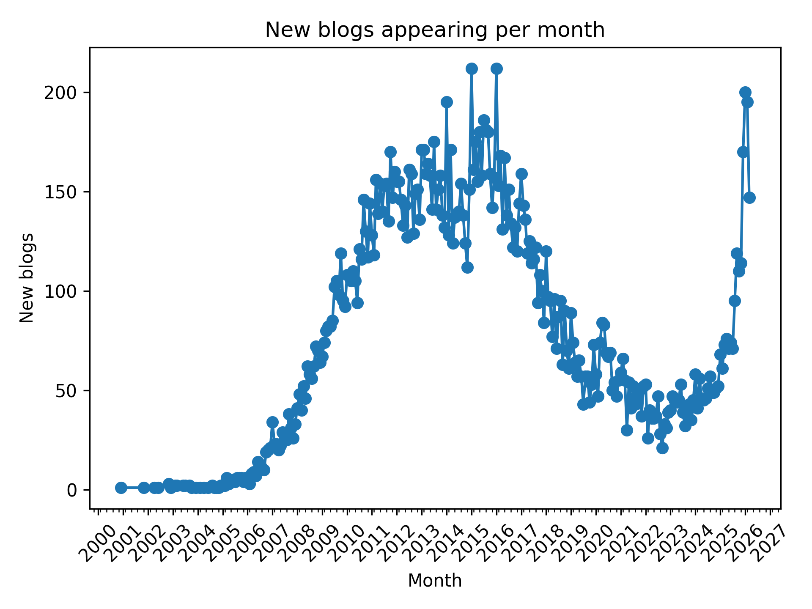
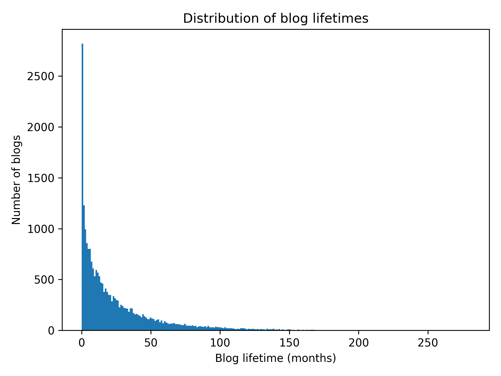
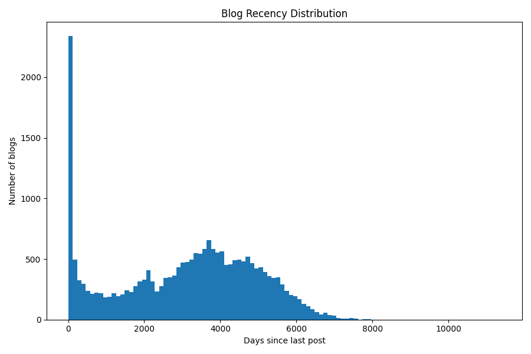

Análise exploratória do dataset BR Crawl
Nesse post compartilho minha análise exploratória no dataset do BR Crawl, projeto que indexa a blogosfera brasileira.
O que é o BR Crawl
O BR Crawl é um projeto que eu iniciei por meados de fevereiro desse ano. Ele é um software que acessa blogs brasileiros e busca links para outros blogs.
O objetivo é criar um índice aberto de todos os blogs em atividade mantidos por autores brasileiros sem fins comerciais. Ou seja, blogs feitos por pessoas de verdade, sem empresas, spam de SEO, essas coisas.
Não vou entrar muito em detalhes sobre como o BR Crawl funciona, a ideia aqui é explorar os dados acumulados: até o recorte utilizado na análise (início de março/2026), eram cerca de 20 mil blogs e ~400 mil postagens.
Se você tem interesse em webscrapping/análise de dados, fica o convite pra participar do projeto. Ele tem o código aberto no github em https://github.com/guites/brcrawl.
Se você gosta de blogs, dê uma olhada no listão do BR Crawl, onde eu atualizo (quase) todos os dias com as últimas postagens encontradas: https://guilhermegarcia.dev/brcrawl.
O Dataset
O dataset é uma base de dados SQLite com cerca de 1gb.
Uma cópia atualizada pode ser acessada neste drive: https://drive.google.com/drive/folders/1_y7BegOcKMOVtbehaGTN9Fn9gP8Lnn1M.
O schema revela as tabelas de interesse:
CREATE TABLE feeds (
id INTEGER PRIMARY KEY AUTOINCREMENT,
domain TEXT NOT NULL,
feed_url TEXT NOT NULL,
status_id INTEGER NOT NULL,
created_at DATETIME NOT NULL DEFAULT CURRENT_TIMESTAMP,
last_checked_at DATETIME,
last_post_guid VARCHAR,
last_feed_item_id INTEGER,
processing_status_id DEFAULT 1,
FOREIGN KEY (status_id) REFERENCES feed_status(id)
);
CREATE TABLE feed_items (
id INTEGER PRIMARY KEY AUTOINCREMENT,
feed_id INTEGER NOT NULL,
title VARCHAR NOT NULL,
author VARCHAR,
content TEXT,
url VARCHAR NOT NULL,
guid INTEGER NOT NULL,
published_at DATETIME NOT NULL,
created_at DATETIME NOT NULL DEFAULT CURRENT_TIMESTAMP,
UNIQUE (feed_id, guid),
FOREIGN KEY (feed_id) REFERENCES feeds(id) ON DELETE CASCADE
);
Para cada feed (blog) temos múltiplos feed_items (posts).
Cada feed tem uma data de criação (quando ele foi adicionado ao dataset) e a data da última checagem, que é quando ele foi visitado pra ver se tinha postagens novas.
Cada feed_item (post de um blog) tem a data de criação (quando ele foi adicionado ao dataset) e a data de publicação.
Salvamos também o título, o autor, o link pro post e, quando disponível, o conteúdo da postagem.
Análises iniciais
- 24182 blogs diferentes.
- 22294 blogs com pelo menos uma postagem registrada.
- 414357 postagens.
Qual a distribuição das postagens ao longo do tempo? Dado nosso dataset de 20k+ blogs, qual percentual esteve em atividade de 2020 pra frente? E em 2025/2026?
Posts por mês

Gerado com o script feed_items_per_month.py.
O gráfico acima conta todos os posts de todos os blogs.
Podemos calcular os “blogs ativos por mês”, contando apenas um post por blog. Isso reduz o impacto de blogs que postam com frequência muito acima da média.

Gerado com o script community_activity.py.
O pico de postagens em 2025-2026, que estava muito acima do número de postagens visto no intervalo de 2010-2017, dá uma boa reduzida quando contamos apenas um post por blog.
Isso indica grande atividade de um número reduzido de blogs, com maior aumento de atividade no último ano. Vejo duas explicações possíveis:
- Facilidade cada vez maior em automatizar a geração de conteúdo.
- Viés de seleção: quanto mais antigo for o blog, maior a chance de perder o domínio, ser deletado, parar de funcionar, etc.
Surgimento de novos blogs
Podemos estimar a taxa com que novos blogs são criados consultando a data do primeiro post registrado por cada blog.

Generado com o script new_blogs_per_month.py.
Intervalo de atividade dos blogs
Por quanto tempo os blogs ficam em atividade?
Podemos nos basear no intervalo entre o primeiro e último post registrado de cada blog:

Gerado com o script blog_lifetime.py.
Como esperado, a maioria dos blogs fica em atividade por pouco tempo, sendo o valor mais comum 0 meses (blogs com um único post).
A distribuição mostra que a maioria dos blogs fica em atividade por até um ano:
- 1992 blogs com um único post (0 meses de atividade)
- 8568 blogs em atividade de 1 mês a 1 ano
- 6651 blogs em atividade de 1 ano a 3 anos
- 2657 blogs em atividade de 3 a 5 anos
- 2019 blogs em atividade de 5 a 10 anos
- 406 blogs em atividade por mais de 10 anos
Blogs com atividade recente
Vamos usar o tempo desde o último post como métrica para entender quantos blogs ainda estão em atividade.

Gerado com o script recency_histogram.py.
O gráfico acima foi gerado agrupando as quantidades em 100 caixas (bins=100),
com intervalo de 11365 dias entres o post mais antigo e o mais recente.
Estatísticas - análise de atividade recente.
| métrica | valor |
|---|---|
| count | 22286.000000 |
| mean | 3075.129678 |
| std | 1869.874190 |
| min | 7.000000 |
| 25% | 1594.250000 |
| 50% | 3351.000000 |
| 75% | 4526.000000 |
| max | 11372.000000 |
Distribuição da atividade em intervalos.
| intervalo | quantidade |
|---|---|
| 0-1 mês | 1476 |
| 1-3 meses | 677 |
| 3-6 meses | 456 |
| 6-12 meses | 591 |
| 1-2 anos | 780 |
| 2-5 anos | 2103 |
| 5-10 anos | 6512 |
Isso indica que dos 22286 blogs com posts registrados:
- 6.6% tiveram posts no último mês;
- 14.3% tiveram posts no último ano.
Próximos passos
Daqui pra frente quero focar no conteúdo dos posts. Tenho interesse em saber se existem potenciais categorias emergentes baseadas nos assuntos abordados pelo blogueiros brasileiros.
Qualquer apontamento ou sugestão, fique a vontade pra entrar em contato. Abraço.